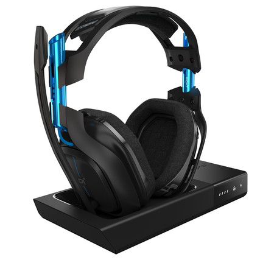
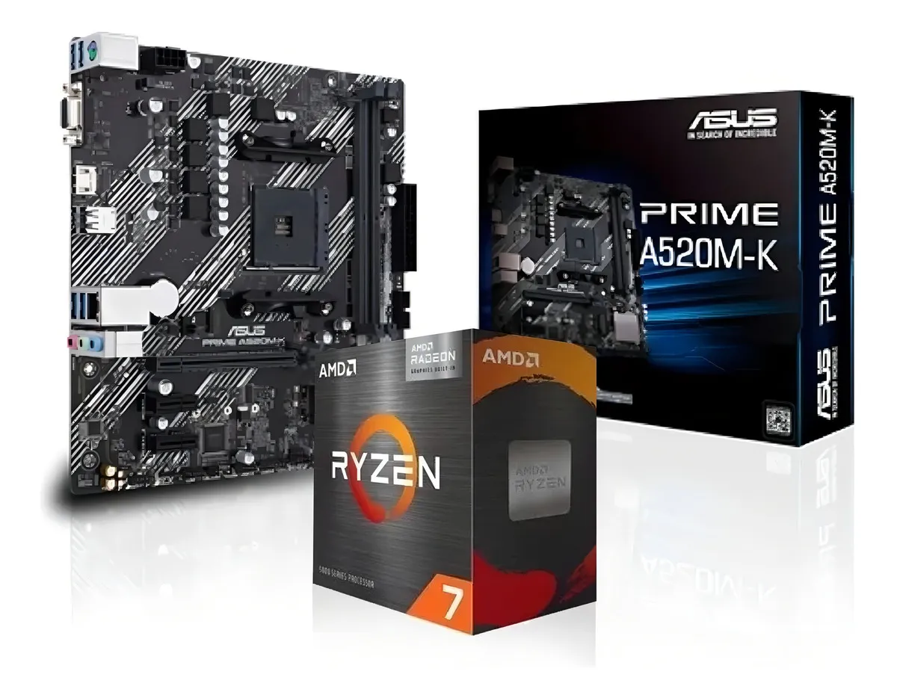

| Imagen | Producto | Descripción | Precio |
|---|---|---|---|
 |
Auriculares | Disfruta de audio digital mejorado y controles integrados en el cable para llamadas por internet claras con una simple conexión USB-A Plug and Play y un micrófono con supresión de ruido.Los controles en el cable permiten ajustar el volumen o silenciarlo sin interrumpir la conversación. | $49.999 |
|
Combo Gamer | Está diseñado especialmente para que puedas expresar tanto tus habilidades como tu estilo. Podrás mejorar tu experiencia de gaming, ya seas un aficionado o todo un experto y hacer que tus jugadas alcancen otro nivel. | $79.999 |
|
Mouse Gamer | Redefine la agilidad: parte de solo 50 g y permite sumar hasta 20 g extra para que ajustes el peso a tu gusto. Ideal para movimientos rápidos y sesiones prolongadas sin fatiga. | $19.999 |
|
Parlante RGB | Ofrece un sonido natural, con una gran claridad y precisión, que se dispersa de manera uniforme. Un parlante que asegura potencia y calidad por igual en la reproducción de contenidos multimedia. | $59.999 |
|
Teclado | Es el mejor complemento para hacer todo tipo de actividades. Es cómodo y práctico al momento de redactar documentos, navegar y hacer búsquedas por internet, ya sea en tu trabajo o en la comodidad del hogar.\n\nDistinción a todo color\nSu retroiluminación le da un toque diferente a tu equipo y resalta su composición cuando es utilizado en espacios poco iluminados.\n\nTecnología antighosting\nEste dispositivo tiene teclas antighosting. Esta cualidad es indispensable si requerís de un uso intensivo del periférico. Gracias a esto podrás evitar fallas al tocar varias teclas al mismo tiempo. | $89.999 |

Combo Actualización Ryzen 7 5700g Con Video + Asus A520m K Color Negro
Contacto: mldev.2026@gmail.com